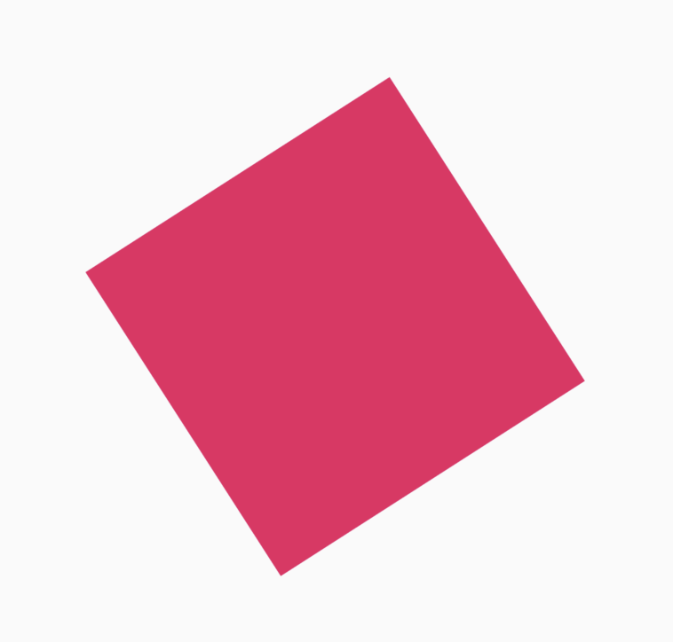
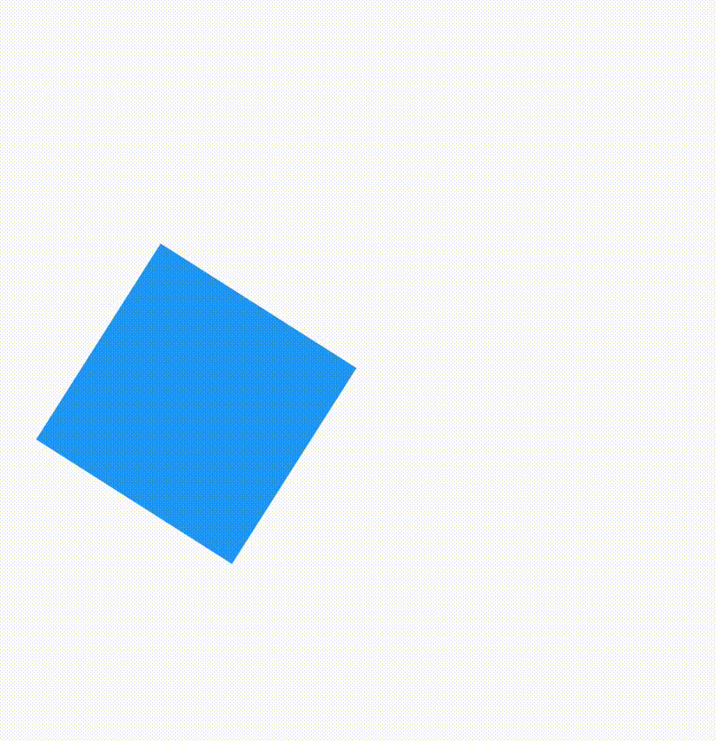
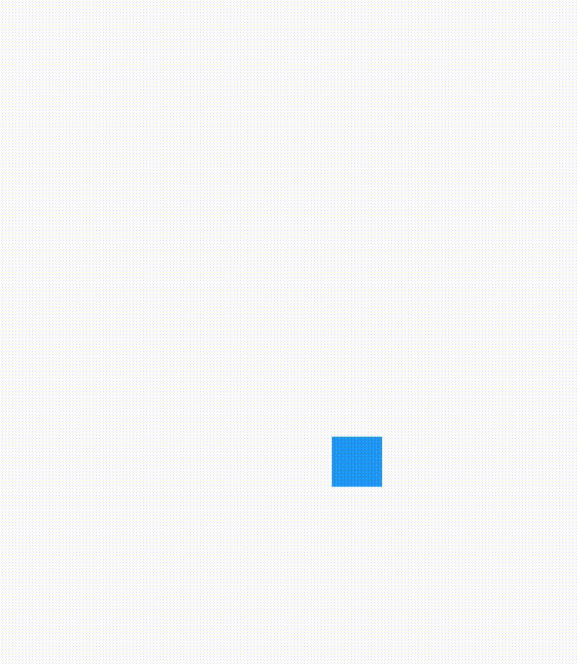
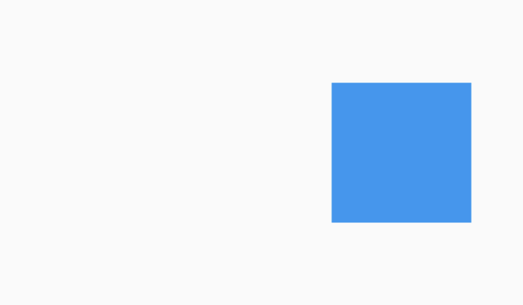

A Transform widget “transforms” (i.e. changes the shape, size, position and orientation) its child widget before painting it. This is extremely useful for custom shapes and many different kinds of animations in Flutter. This can be used to transform any widget and distort it to any shape we like or move it around as well.
The Transform widget gives us a few constructors to help simplify the creation of transformations. Common operations such as scaling, rotation or translation are all provided via constructors.
The types of Transforms are:
We will look at the single-operation constructors first.
As the name suggests, Transform.rotate simply rotates the child by an angle. Here the child is a square container.
Transform.rotate(
angle: 1.0,
child: Container(
height: 200.0,
width: 200.0,
color: Colors.pink,
),
),

The angle parameter lets us set an angle (in radians) the child will be rotated by.
The widget also allows us specify an origin for the rotation of our widget. We specify the origin using the origin parameter. This takes an Offset. The Offset notes the distance of the origin in relation to the center of the child itself. When we don’t need explicitly set the offset however, the child rotates around its own center.
If the child is rotated from the lower right point of the square, it would look like this.
The code for the above rotation is:
Transform.rotate(
angle: 1.0,
origin: Offset(50.0, 50.0),
child: Container(
height: 100.0,
width: 100.0,
color: Colors.blue,
),
),
The square has sides of 100.0. This code rotates the container about the lower right vertex of the square. Since the offset is 50.0 to the right and 50.0 below, the center of the child is defined by the offset (50.0,50.0)
The scale constructor scales the child by the given scale parameter.
Transform.scale(
scale: 0.5,
child: Container(
height: 200.0,
width: 200.0,
color: Colors.yellow,
),
),
Here we set the scale to 0.5 to reduce the size of the container by half. Similar to the rotation transform, we can also set an origin in scaling.
When the is left blank, the center of the widget is taken. When scaling, the changes on each side are exactly the on each.
When the origin is left blank, the center of the widget is taken. When scaling, the changes on each side are exactly the same.
Like the last example, let’s now set the origin to the lower right corner. If we now reload our app, the widget will scale differently compared to the default (the center).
This is achieved by providing the origin (50.0,50.0). This offset corresponds to the lower right corner.
Transform.scale(
scale: 0.5,
origin: Offset(50.0, 50.0),
child: Container(
height: 100.0,
width: 100.0,
color: Colors.blue,
),
),
Transform.translate translates the child of the transform widget by a specified amount in the X and Y direction. We supply an Offset which has the amount by which we want to move the child by in the X and Y directions.
Here we supply an Offset which moves the container 100.0 in the X direction. Any change in the second parameter would move it in the Y direction. You can also provide negative value to move the widget to the left in the x axis and to the bottom in the y axis.
We cannot set an origin in translation since translation is not affected by origin. Since we give an offset and not coordinates, the origin doesn’t make a difference.
Unlike the other constructors in the list, the default constructor allows us to do multiple operations at once. It is the most powerful constructor from the list.
Transform widgets allow us to fundamentally alter how widgets look and behave, allowing us to create new, complex types of animations. Underneath the Transform widget, a 4D matrix powers the actual transformation — defined by the Matrix4 class. While Flutter provides easy ways to do transformations such as translation, scaling, and rotation, we can use the Matrix4 to create even more awesome things such as 3D perspective transformation.
We will learn more about Matrix4 and Transform constructor later.